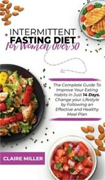

Improving your diet | HealthEngine Blog
 Health Engine Patient BlogHome Health for you Women's Health Men's Health Family's Health Senior's Health Anatomy Diseases Symptoms Treatments White Cell Count Test When to see a doctor about your cold Health A-Z Allergies Back Pain Chronic Pain Cold & Flu Dental Care Digestion Ear, Nose, Throat Eye Care Heart Lungs Medicine & Tests Mental Health Neurology Pregnancy Skincare and Beauty Urinary and Kidney The tech solution bringing your medication straight to your door Things you need to know about the COVID-19 vaccine in Australia Living Healthy Exercise Family General Nutrition Pregnancy and Lifestyle Preventative Health Sleep The tech solution bringing your medication straight to your door Things you need to know about the COVID-19 vaccine in Australia Tools Med Glossary Tools Videos COVID-19 COVID-19 The tech solution bringing your medication straight to your door Things you need to know about the COVID-19 vaccine in Australia Looking for a practitioner?
HealthEngine helps you find the practitioner you need.
Find your practitioner Find a provider Home What are you looking for? Search for articlesPopular searches
How can I relieve my back pain?22 Dec 2009
Improving your diet
Children's health Children's Health Men's Health Nutrition Preventative Health Weight Loss Women's Health Introduction to improving your diet What is a healthy diet? Benefits of having a healthy diet Tips for improving your diet Keep track of how much you eat and don’t eat more than you expend Eat a wide variety of foods every day Base your diet on cereals and whole grains Increase fruit and vegetable consumption Meet calcium requirements to ensure healthy teeth and bones Reduce fat, salt and sugar intake Drink plenty of water Choose a diet that offers maximum health benefits
Introduction to improving your diet
The beginning of the New Year is a time when many people resolve to improve aspects of their health and lifestyle. Many will resolve to improve their diet, either because they want to reduce their weight , or because they want to improve their nutritional health. Even after deciding to improve their diet, some people may have difficulty doing so. They may have well-developed unhealthy eating patterns, or they may not be well informed about what they should be eating to make their diet healthier. Obtaining good information about healthy eating is therefore an important part of improving diet.
What is a healthy diet?
A healthy diet is one in which energy is consumed in the same quantities as it is expended , and which contains all essential dietary nutrients (e.g. protein , vitamins and minerals ). The total amount of energy an individual should consume will vary depending on gender, age and exercise habits . All people should source their energy from a variety of food groups and include plenty of fruits, vegetables and wholegrain cereals, and only small amounts of fat.
The National Health and Medical Research Council (NHMRC) recommend that adult women consume foods from the following groups in the following proportions each day:
Fruit: 2 servings (one serving is a medium piece of fruit or equivalent); Vegetables: 5 servings (one serving is 75 g of cooked vegetables or a cup of raw salad vegetables); Cereals: 4–9 servings (one serving is two slices of bread; one cup of cooked rice or equivalent); Dairy products: 2 servings (one serving is 250 mL of milk, 40 g of cheese, or 200 g of yoghurt); Lean meat, poultry, fish and legumes: 1 serving (one serving is 65–100 g of cooked meat or equivalent); Fats and sugars: In small quantities, occasionally.Adult men should consume the following quantities of the following foods each day:
Fruit: 2 servings (one serving is a medium piece of fruit or equivalent); Vegetables: 5 servings (one serving is 75 g of cooked vegetables or a cup of raw salad vegetables); Cereals: 6–12 servings (one serving is two slices of bread; one cup of cooked rice or equivalent); Dairy products: 2 servings (one serving is 250 mL of milk, 40 g of cheese, or 200 g of yoghurt); Lean meat, poultry, fish and legumes: 1 serving (one serving is 65–100 g of cooked meat or equivalent); Fats and sugars: In small quantities, occasionally.
Benefits of having a healthy diet
A healthy diet is essential for good health and can reduce the risk of numerous chronic health conditions, including:
Metabolic syndrome ; Diabetes ; Cardiovascular disorders; Stroke ; Hypertension ; Cancer ; Eye disorders.Maintaining a healthy diet also helps maintain a healthy weight, which:
Promotes self-esteem; Reduces the likelihood of depression ;and Gives you more energy to enjoy life.
Tips for improving your diet
There are many easy ways to improve the nutritional content of the diet and reduce fats and calories. If you are trying to improve your diet, try some of the following tips.
Keep track of how much you eat and don’t eat more than you expend
To stop yourself from consuming more energy than you expend and becoming overweight, it is important to monitor how much you eat each day by, for example, using a calorie counter.
Eat a wide variety of foods every day
An immense variety of fresh and packaged foods are available in Australia, making it easy for Australians to enjoy a diverse and healthy diet. As different types of food provide different nutrients in various quantities (e.g. orange vegetables such as pumpkin and carrot contain lots of vitamin A, while citrus fruits are high in vitamin C ), eating a varied diet can help ensure all essential nutrients are obtained through eating. To increase the variety of foods in your diet, why not:
Try a new type of fruit or vegetable every week; Serve food from a variety of groups with each meal (e.g. serve a salad and a glass of milk with breakfast, lunch or dinner); Prepare a healthy eating plan that includes a wide variety of foods and outlines which ones will be eaten each day.Base your diet on cereals and whole grains
Many individuals try to avoid starchy foods (e.g. bread, rice and potatoes) when improving their diet, and particularly when trying to lose weight, because they incorrectly believe that starchy foods cause weight gain. On the contrary, starchy foods are an essential source of energy, providing carbohydrates, protein and fibre, and contain only about half as many calories per gram as fats. It is important to base your diet on cereals and grains , and to do that it may be useful to:
Eat plenty of cereals or grains with every meal; Choose wholegrain options (e.g. brown rice, wholemeal bread and high fibre breakfast cereals) as these contain more fibre per gram than other options; Include rice and pasta in your diet, as these options contain less salt than bread; Try new cereals and grains which you haven’t tried before or don’t eat very often (e.g. couscous or polenta).Increase fruit and vegetable consumption
Fruit and vegetables provide a variety of essential vitamins and minerals that protect against a range of health conditions and ensure the body functions properly. Include at least two pieces of fruit and five servings of vegetables in the daily diet to ensure adequate nutrient intake.
The majority of Australians do not consume sufficient fruit and vegetables. If you want to improve the fruit and vegetable content of your diet, you could try:
Eat at least two pieces of fruit and five servings of vegetables every day; Eat a variety of vegetables every day, including dark green vegetables, leafy green vegetables, orange vegetables, raw salad vegetables and legumes; Eat fruit and vegetables with every meal; Snack on fruits and vegetables instead of chips, cakes or unhealthy foods; Use fresh as well as frozen and tinned vegetables; Add fruit to breakfast cereal or as a toast topping; and Where possible, eat the skin of fruit as this contains fibre.Meet calcium requirements to ensure healthy teeth and bones
Dairy products (e.g. milk, cheese and yoghurt) provide the best and most readily absorbable source of calcium . They are an essential component of a healthy diet. Calcium is an important component of teeth and bones, and inadequate calcium intake early in life increases the risk of bone conditions such as osteoporosis later in life. Consuming adequate amounts of calcium is therefore very important. The following tips may help you to increase your calcium intake:
Eat dairy with every meal, as the calcium it contains is more readily absorbed when it is eaten with other food sources. Try adding a glass of milk or a serving of cheese to meals; Choose low-fat dairy varieties to obtain the calcium benefits of dairy without consuming additional fat; If you cannot or do not want to eat dairy products, add a calcium supplement to your diet, although be aware that supplements lack the additional nutrients contained in dairy sources; When shopping, ensure you purchase enough dairy products for everyone in the house to eat two servings per day; Make healthy fruit smoothies by blending fruit, with low fat milk, ice and low-fat yoghurt.Reduce fat, salt and sugar intake
Fats (particularly saturated fats) and sugars contain a lot of calories but very few nutrients. Excessive consumption of these foods can cause weight gain and increase the risk of numerous chronic health conditions. Consuming too much salt also increases the risk of chronic health conditions, in particular cardiovascular disorders. In order to reduce consumption of fat, salt and sugar, you could:
Choose lean meat varieties and prepare them without using fat (e.g. barbecue or grill). Remove the skin and trim the fat from meat before cooking it; Choose unsaturated fats (e.g. olive oil or canola oil) for cooking; Avoid take away and processed foods, as these often contain large quantities of fat, salt or sugar; Avoid fatty, salty and sugary snacks. Choose fresh fruits and vegetables (with low-fat yoghurt) or unsalted nuts or seeds instead; Choose low fat dairy options; and Don’t add salt to vegetables or other foods when cooking.Drink plenty of water
Adults should drink at least eight cups of water every day to maintain good health. When it is hot or you are performing physical activities, you may need to consume even more water. To increase your water consumption:
Drink a glass of water with every meal; Drink water instead of fruit juice, soft drink or alcohol; Carrya bottle of water in your bag so that you can sip it if you become thirsty; and Drink plenty of water during and after physical exercise.Choose a diet that offers maximum health benefits
Whether the goal is simply to lose weight, or also to improve systemic health, it is important to select a diet low in saturated fats and high in whole grains, fruits and vegetables (e.g. the Mediterranean diet ). Maintaining such a diet can help a person to lose weight, and will also reduce their risk of chronic health conditions such as metabolic syndrome and diabetes.
More information
For more information on staying healthy in the New Year, including tips on diet, partying, exercise and general health, see Health in the New Year .References
University of Maryland Medical Centre. New Year’s resolution guide [online]. 11 December 2008 [cited 16 December 2009]. Available from: URL link Dietary Reference Intakes for Energy, Carbohydrate, Fiber, Fat, Fatty Acids, Cholesterol, Protein and Amino Acids. Chapter 5: Energy [online]. Washington DC: National Academies Press; 2005. [cited 6 June 2009]. Available from: URL link National Health and Medical Research Council. Dietary guidelines for Australian adults [online]. 10 April 2003 [cited 13 December 2009]. Available from: URL link Esposito K, Marfella R, Ciotola M, et al. Effect of a Mediterranean-style diet on endothelial dysfunction and markers of vascular inflammation in the metabolic syndrome: A randomized trial [online]. JAMA 2004: 292(12): 1440-6. Blaine BE, Rodman J, Newman JM. Weight loss treatment and psychological well-being: A review and meta-analysis. J Health Psychol. 2007; 12(1): 66-82. American Heart Foundation. Diet and lifestyle recommendations [online]. 2009 [cited 13 December 2009]. Available from: URL link Food Standards Agency UK. Healthy Christmas eating [online]. 2009 [cited 11 December 2009]. Available from: URL link Kellett E, Smith A, Schmerlaib Y. The Australian guide to healthy eating [online]. Australian Government Department of Health and Ageing. 1998. [cited 13 December 2009]. Available from: URL link Australian Institute of Health and Welfare. Low fruit and vegetable consumption [online]. 2001 [cited 14 December 2009]. Available from: URL link Go for 2 & 5. Tips [online]. Australian Government Department of Health and Ageing. 2009 [cited 14 December 2009]. Available from: URL link Weaver CM. Calcium bioavailability and its relation to osteoporosis. Proc Soc Exp Biol Med. 1992; 200(2): 157-60. Centers for Disease Control and Prevention. Water: Meeting your daily fluid needs [online]. 3 December 2008 [cited 16 December 2009]. Available from: URL linkShare
Share
Related Articles
Improving men’s health: What check-ups are needed?It’s important that men across Australia access health…
Get your 2020 flu shot earlyJump to When is it ideal to get…
Iron deficiency anaemiaIron deficiency anaemia is a blood disorder in…
Need a health appointment?
Find and book a doctor, dentist, physio and more on HealthEngine
Find a practitioner Find a practitionerRelated Articles
07 Dec 2020
Anxiety Anxiety & Depression: How Your Mental Health Professional Can Help12 Nov 2020
Family Common myths people may have around making a Will09 Jul 2020
back School can be a pain in the back – literallyLooking for a practitioner?
Find practitioners near you and book your next appointment online.
Find a practitionerExpand Directory
Health Topics Cold & Flu Dental Care Back Pain Eye Care Mental Health Ear, Nose, Throat Skincare and Beauty Pregnancy HealthEngine Contact Us About Us About Authors Practice Services List Your Appointments List a Practice HON Code Certification Find a Practice Find a Practitioner GP Appointments After Hours GP Appointments Bulk Billing GP Appointments Dentist Appointments Near You Physiotherapist Appointments Chiropractor Appointments Psychologist Appointments© 2021 HealthEngine.
Terms of Use | Privacy Policy